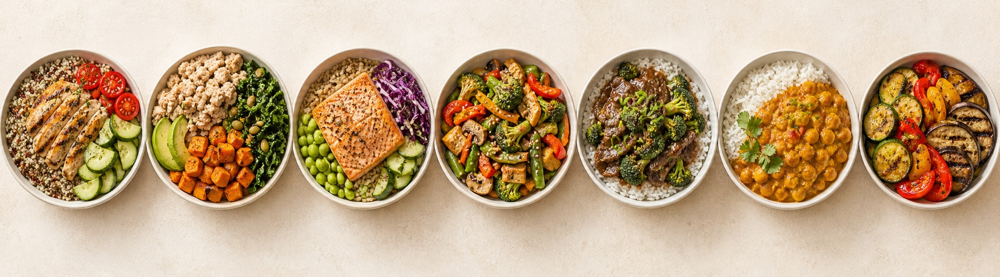
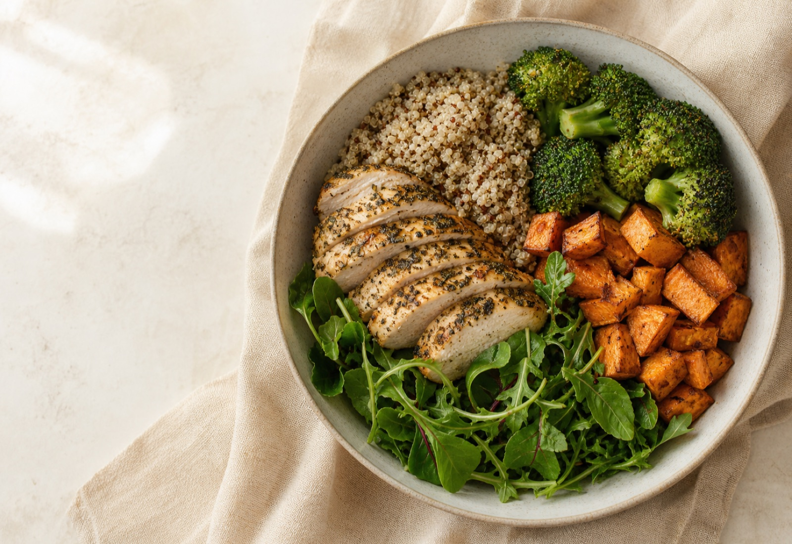
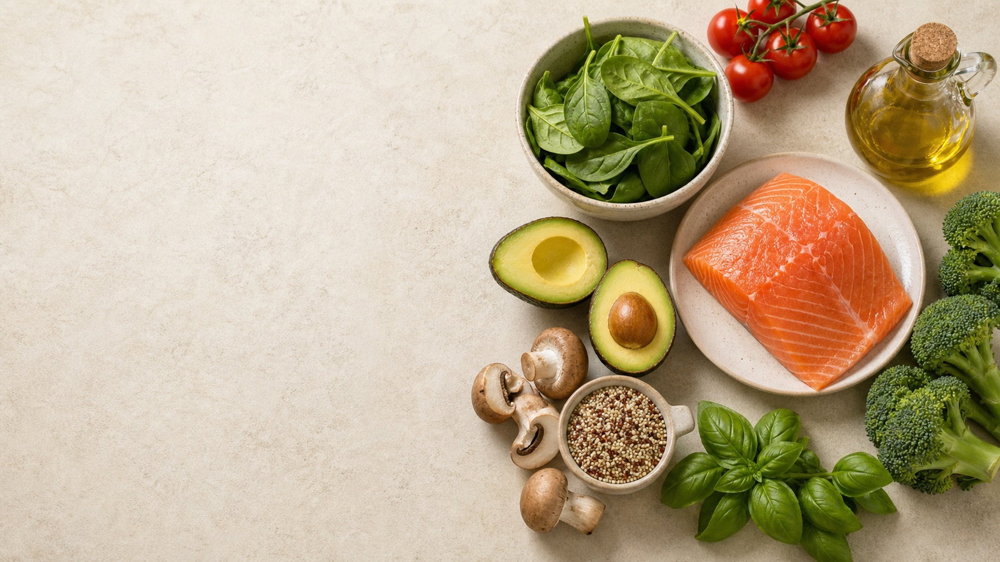
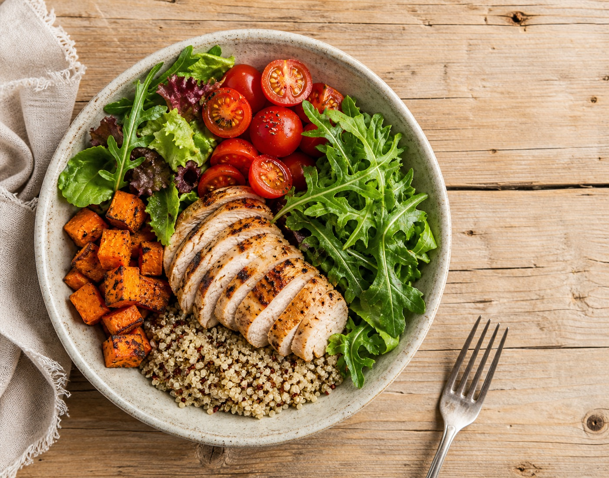

Weekly planningA complete week,
A complete week,
still easy to change.

Personalized meal planning shaped around real preferences, dietary constraints, and everyday routines.
I worked across product implementation, backend logic, personalization, payments, responsive UI, and iteration after release.
Selected for the strongest overall solution across functionality, visual appeal, efficiency, accessibility, and ease of use. The result included a $500 award and led to a professional web-development contract with GetMoving100 to continue improving and supporting the product.
Shaped around real tastes, schedules and routines.
See the live product
Preferences, allergies, nutrition, time and groceries move through one adjustable flow.



Open a topic for the deeper view.
I contributed to the ASP.NET and C# application, PostgreSQL-backed behavior, responsive product flows, payment workflows, and iteration after release.
Only verified layers are shown. Internal topology and third-party services are not inferred.
Likes, dislikes, allergies, dietary needs, goals, and medication-related food considerations shape the plan. A user can change one meal without losing a week that already works.
Clearer onboarding, fewer competing actions, and more consistent plan controls.
What can we add?
Where does the plan stop being useful?
Next: recommendation evaluation, stronger telemetry, clearer feedback, and accessibility testing.